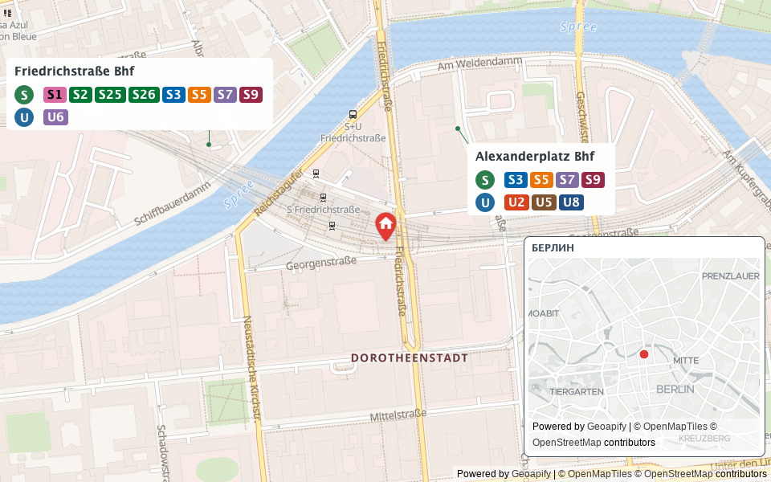
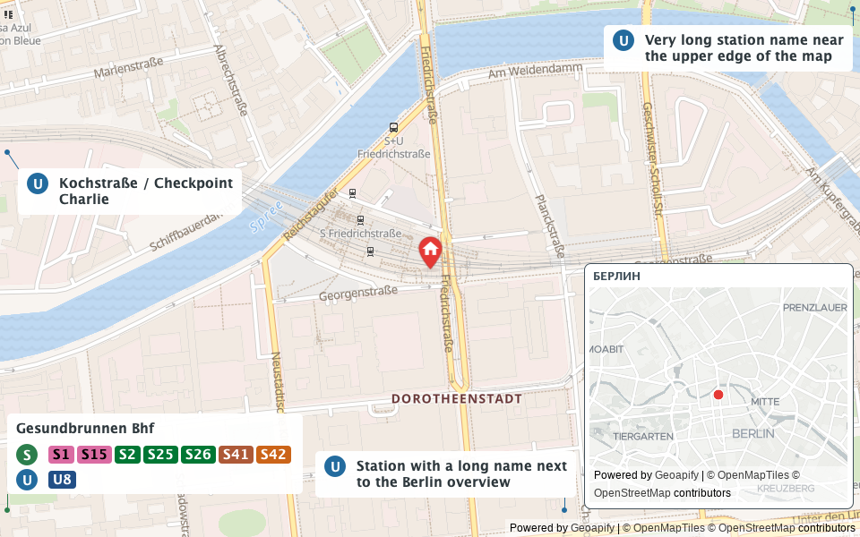
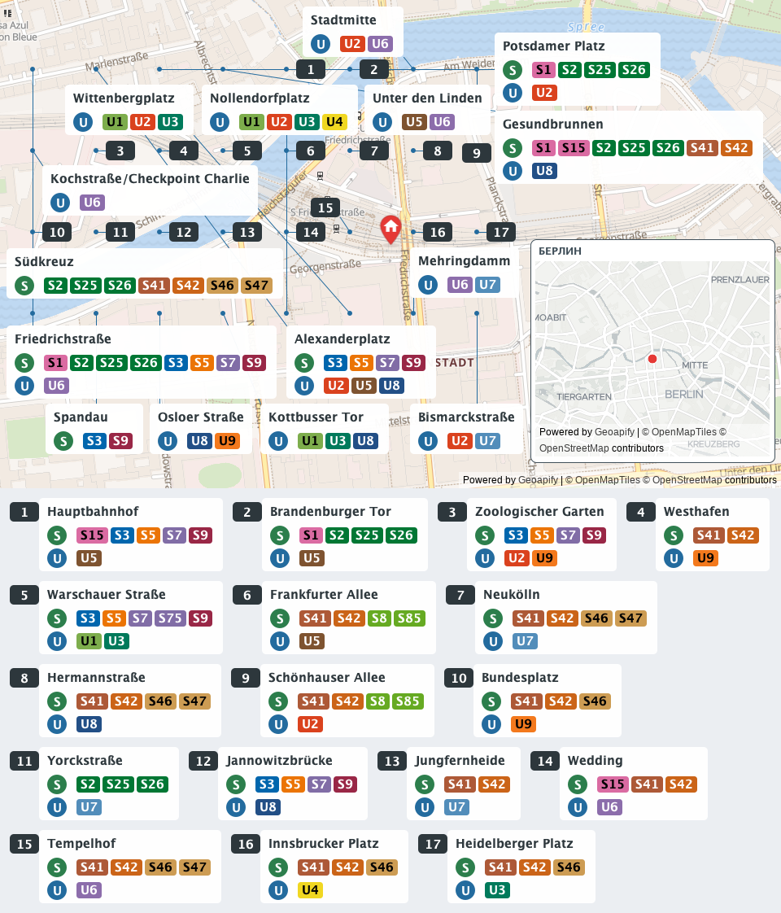
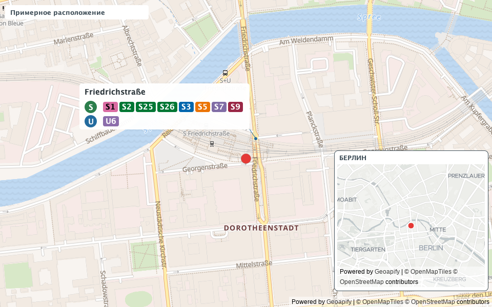
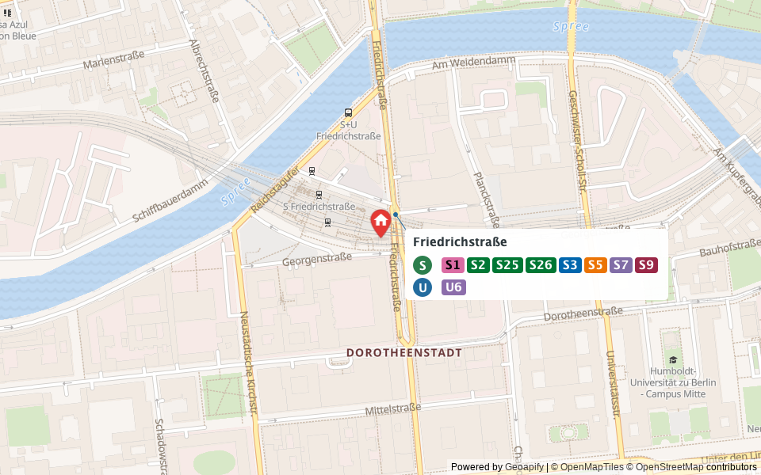
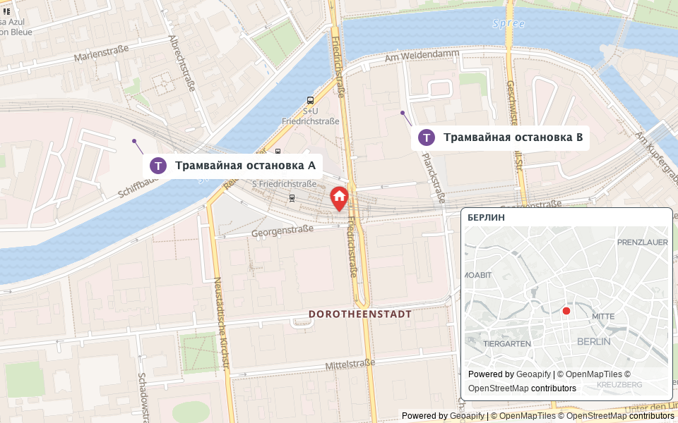
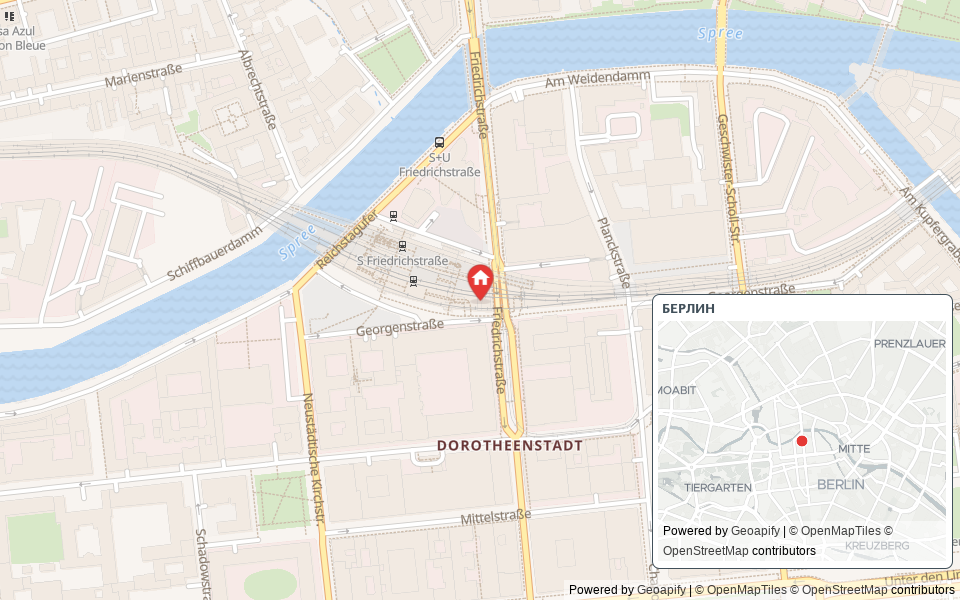

Настоящая подложка, рабочий рендерер. Условная точка квартиры. Искусственные сценарии проверяют расположение подписей, а не географию станций. Нажмите на изображение, чтобы открыть полный размер.
Реальные станции из Geoapify возле условной точки в центре Берлина.
960 × 600Название станции целиком; все S-Bahn в одном ряду, все U-Bahn в другом, без переноса линий. Координаты подписей заданы для теста.
960 × 600
Перенос строк, сохранение полного названия, размещение внутри границ. Искусственные позиции.
960 × 600
32 станции на искусственно уплотнённой карте. Непоместившиеся подписи вынесены ниже; номера связывают их с картой. География станций в этом стресс-сценарии условная.
960 × 1122
Круг вместо точной метки дома и предупреждение сверху. Подписи не перекрывают предупреждение.
960 × 600
Основная карта и станции сохраняются при сбое загрузки обзорной карты.
960 × 600
Пример отображения трамвайных остановок, когда видимых S/U нет. Тестовые названия и позиции.
960 × 600
Только основная карта, метка квартиры и обзор: так выглядит сбой Places API.
960 × 600